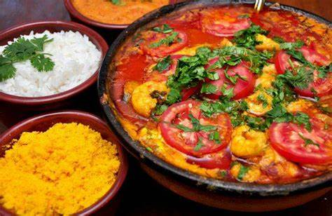

Moqueca de Peixe

A moqueca de peixe é um cozido de peixe, típico da culinária baiana.
Essa moqueca é preparada com peixe vermelho e banana da terra. Também, temos a opção de robalo,
badejo ou dourado.
Prato para duas pessoas.
R$ 185,00
Retornar para Cardápio